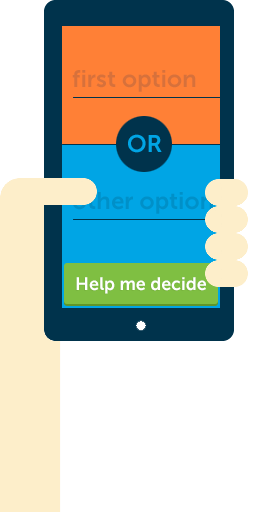

Does it work?
It works
Creative
❮Coding❯
Matteo
@baddeo
Are you
a coder?
...code?

How do you
learn to code?
Copy
Hack
WWWTF?
HTML + CSS + JS
WHAT + HOW + IF
Spot the differences
<p id="message">Hello</p>
<p id="message"Hello<p/>
p#message { color: blue ;}
p#message { colour blue:}
var msg = jQuery("p#message")
ar msg = jquery(p#message
Today you make...
Become
Webliterate
Go online
find CodePen
sign up (for free)
Robot time!
Driven icon by Luis Prado